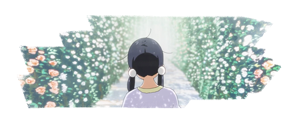
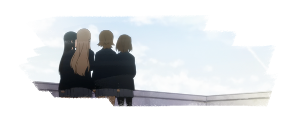

Naoko Yamada (pronunciation) (山田 尚子, Yamada Naoko) is a Japanese animator and director. Working at Kyoto Animation, she directed the anime series K-On! (2009–2010) and Tamako Market (2013), and the anime films A Silent Voice (2016), Liz and the Blue Bird (2018) and The Colors Within (2024).In 2021, she directed the original net animation (ONA) The Heike Story under Science Saru. The series premiered on Japanese television in January 2022. She has won multiple awards for her work, as well as become world renowned for her stylistic choices in anime. She was also one of the youngest people to be made a director with Kyoto Animation, getting her first directing opportunity around 4 years after finishing college and starting work for the studio.
Yamada was born in Kyoto Prefecture. She enjoyed drawing as a child and would copy images from the Patlabor and Dragon Ball series. Always showing an interest in film, Yamada would stay up late as a child just to catch whatever film might be playing in the evening slot. She showed interest in extracurricular activities as well, joining the volleyball club in primary school and the tennis and photography clubs in high school. At the Kyoto University of Art and Design, she studied oil painting and was a member of the special effects club.
Yamada originally intended to work in film after graduating from university, but she decided to join Kyoto Animation after seeing an advertisement the company had posted at her school. She first worked as an inbetweener for the very popular anime Inuyasha (2000-2004), which was outsourced to the studio at that time. She was eventually promoted as a key animator for a TV adaptation of Air (2005). From there she would work as the Key Animator on a number of other shows including The Melancholy of Haruhi Suzumiya, Kanon, and Lucky Star. She would then be mentored by one of the directors already working at Kyoto Animation, Tatsuya Ishihara. When asked about his initial thoughts on Yamada, Ishihara said " I thought she was a weird subculture girl who went to an arts university."
Her first directorial work was for the 17th episode of the anime series Clannad (2008), though it was K-On! (2009) that marks her chief directorial debut and the development of her unique style. The series would become successful, breaking numerous records and spurring another season in 2010 and a film in 2011, both directed by Yamada. In 2013, she directed Tamako Market, an original work which focused on the main characters change from adolescence to adult hood. The following year, she directed its sequel film, Tamako Love Story, in which she won the New Face Award at the Japan Media Arts Festival. She storyboarded the entire film herself, and also wrote the lyrics for the opening theme song, Everybody Loves Somebody.
Yamada's next project was the feature film A Silent Voice (2016), an adaptation of the manga of the same name. Although it reflected on elements of bullying and physical impairment in Japan, Yamada did state that she did not want those to be the central focal point, but rather wanted the audience to focus on the more positive aspects of the film and use bullying as a means of showing Shoya's personality as a teen. The film opened at #2 in the Japanese Box Office and grossed a total of ¥2.3 billion, the 19th highest-grossing film in Japan in 2016. The film also received multiple award nominations, including Best Animation Film in the Mainichi Film Awards and the Excellent Animation of the Year in the Japan Academy Prize. A Silent Voice is scheduled to be re-released in North American theaters on October 12, 2022 for the film's fifth anniversary.
Yamada's work often features low-angle shots on the legs, a stylistic choice that sets her apart from many other anime directors. When asked about this choice, she explained, "When you're nervous, you move your legs around. I think that it would be nice to express emotion like that."
Yamada credits the majority of her style and themes to her love of live action film. Even though she decided to work in animation, much of her shot composition and use of space is heavily influenced by film styles found in live action work. Specifically, her use of low angle shots, shallow depth of field, and varying camera movement, allows Yamada's to pull in the audience stylistically just as any live action film would. When it comes to how Yamada thinks about her characters, she focuses heavily on styles of communication. Yamada also focuses a lot on the color composition in each shot of her works, by using specific tones she can better portray the emotions the characters are going through.